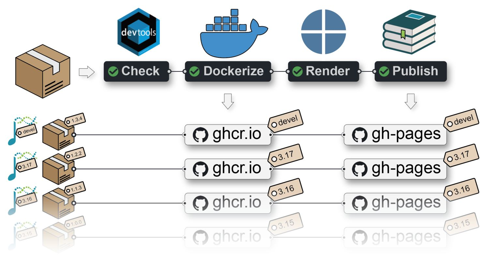

Write Quarto books with Bioconductor
Package: BiocBookDemo
Authors: Jacques Serizay [aut, cre]
Compiled: 2023-09-29
Package version: 0.99.0
R version: R version 4.2.3 (2023-03-15)
BioC version: 3.16
License: MIT + file LICENSE
What are BiocBooks?
BiocBooks are package-based, versioned online books with a supporting Docker image for each book version.
A BiocBook can be created by authors (e.g. R developers, but also scientists, teachers, communicators, …) who wish to:
- Write: compile a body of biological and/or bioinformatics knowledge;
- Containerize: provide Docker images to reproduce the examples illustrated in the compendium;
- Publish: deploy an online book to disseminate the compendium;
- Versionize: automatically generate specific online book versions and Docker images for specific Bioconductor releases.
A {BiocBook}-based package in Bioconductor devel or release X.Y (i.e. with a branch named RELEASE_X_Y) provides:
- A Docker image: hosted on ghcr.io;
- A
BiocBookonline book (a.k.a website): hosted on the repositorygh-pagesbranch;
Both are built against the specific Bioconductor release X.Y.

What is this {BiocBook} package?
The {BiocBook} package offers a streamlined approach to creating BiocBooks, with several important benefits:
- The author creates a {
BiocBook}-based package without leaving R; - The author writes book chapters in
pages/*.qmdfiles using enhanced markdown; - The author can submit its {
BiocBook}-based package to Bioconductor.
The containerization and publishing of the new {BiocBook}-based package is automated:
- Github Action workflow generates different Docker images for different Bioconductor releases, with the packages used in the book pre-installed;
- A Github Action workflow publishes different book versions for different Bioconductor releases.
Main features of BiocBooks
Fully compatible with the Bioconductor Build System
When a {BiocBook}-based package is accepted into Bioconductor, it is automatically integrated into the Bionconductor Build System (BBS).
This means that it is getting built using R CMD build --keep-empty-dirs --no-resave-data .. This triggers the rendering of the book contained in /inst/. Book packages built by the BBS are then automatically deployed and are eventually available at https://bioconductor.org/books/<bioc_version>/<pkg>/.
Automated versioning of Docker images
A separate Docker image is built for each branch (named devel or RELEASE_X_Y) of a {BiocBook}-based Github repository.
Each Docker image provides pre-installed R packages:
- Bioconductor release
X.Y; - Specific book dependencies from Bioconductor release
X.Y(listed inDESCRIPTION); - The book package itself
The Docker images also include a micromamba-based environment, named BiocBook, in which all the softwares listed in requirements.yml are installed.
For example, Docker images built from the {BiocBookDemo} package repository are available here:
👉 ghcr.io/js2264/biocbookdemo 🐳
You can get access to all the packages used in this book in < 1 minute, using this command in a terminal:
bash
docker run -it ghcr.io/js2264/biocbookdemo:devel RAutomated versioning of the online book
Regardless of whether the book package is submitted to Bioconductor, a Github Actions workflow publishes individual online books for each branch (named devel or RELEASE_X_Y) of a BiocBook-based Github repository.
For example, the online book version matching the devel version of the {BiocBook} package is available from:
RStudio Server
An RStudio Server instance based on a specific Bioconductor <version> (devel or RELEASE_X_Y) can be initiated from the corresponding Docker image as follows:
bash
docker run \
--volume <local_folder>:<destination_folder> \
-e PASSWORD=OHCA \
-p 8787:8787 \
ghcr.io/<github_user>/<biocbook_repo>:<version>The initiated RStudio Server instance will be available at https://localhost:8787.
Further instructions regarding Bioconductor-based Docker images are available here.
Acknowledgments
This works was inspired by and closely follows the strategy used in coordination by the Bioconductor core team and Aaron Lun to submit book-containing packages (from the OSCA series as well as SingleR and csaw books).
- Orchestrating Single-Cell Analysis with Bioconductor (n.d.)
- Assigning cell types with SingleR (2023)
- The csaw Book (2023)
This package was also inspired by the *down package series, including:
Session info
sessioninfo::session_info(
installed.packages()[,"Package"],
include_base = TRUE
)
## ─ Session info ────────────────────────────────────────────────────────────
## setting value
## version R version 4.2.3 (2023-03-15)
## os Ubuntu 22.04.2 LTS
## system x86_64, linux-gnu
## ui X11
## language (EN)
## collate C
## ctype en_US.UTF-8
## tz Etc/UTC
## date 2023-09-29
## pandoc 2.19.2 @ /usr/local/bin/ (via rmarkdown)
##
## ─ Packages ────────────────────────────────────────────────────────────────
## package * version date (UTC) lib source
## askpass 1.1 2019-01-13 [2] RSPM (R 4.2.0)
## base * 4.2.3 2023-03-17 [3] local
## base64enc 0.1-3 2015-07-28 [2] RSPM (R 4.2.0)
## BH 1.81.0-1 2023-01-22 [2] RSPM (R 4.2.0)
## Biobase 2.58.0 2022-11-01 [2] Bioconductor
## BiocBookDemo 0.99.0 2023-09-29 [1] Bioconductor
## BiocCheck 1.34.3 2023-03-03 [2] Bioconductor
## BiocGenerics 0.44.0 2022-11-01 [2] Bioconductor
## BiocManager 1.30.20 2023-02-24 [2] CRAN (R 4.2.3)
## BiocStyle 2.26.0 2022-11-01 [2] Bioconductor
## BiocVersion 3.16.0 2022-04-26 [2] Bioconductor
## biocViews 1.66.3 2023-03-06 [2] Bioconductor
## bitops 1.0-7 2021-04-24 [2] RSPM (R 4.2.0)
## bookdown 0.33 2023-03-06 [2] RSPM (R 4.2.0)
## boot 1.3-28.1 2022-11-22 [3] CRAN (R 4.2.3)
## brew 1.0-8 2022-09-29 [2] RSPM (R 4.2.0)
## brio 1.1.3 2021-11-30 [2] RSPM (R 4.2.0)
## bslib 0.4.2 2022-12-16 [2] RSPM (R 4.2.0)
## cachem 1.0.7 2023-02-24 [2] RSPM (R 4.2.0)
## callr 3.7.3 2022-11-02 [2] RSPM (R 4.2.0)
## class 7.3-21 2023-01-23 [3] CRAN (R 4.2.3)
## cli 3.6.1 2023-03-23 [2] RSPM (R 4.2.0)
## clipr 0.8.0 2022-02-22 [2] RSPM (R 4.2.0)
## cluster 2.1.4 2022-08-22 [3] CRAN (R 4.2.3)
## codetools 0.2-19 2023-02-01 [3] CRAN (R 4.2.3)
## commonmark 1.9.0 2023-03-17 [2] RSPM (R 4.2.0)
## compiler 4.2.3 2023-03-17 [3] local
## cpp11 0.4.3 2022-10-12 [2] RSPM (R 4.2.0)
## crayon 1.5.2 2022-09-29 [2] RSPM (R 4.2.0)
## credentials 1.3.2 2021-11-29 [2] RSPM (R 4.2.0)
## curl 5.0.0 2023-01-12 [2] RSPM (R 4.2.0)
## datasets * 4.2.3 2023-03-17 [3] local
## desc 1.4.2 2022-09-08 [2] RSPM (R 4.2.0)
## devtools 2.4.5 2022-10-11 [2] RSPM (R 4.2.0)
## diffobj 0.3.5 2021-10-05 [2] RSPM (R 4.2.0)
## digest 0.6.31 2022-12-11 [2] RSPM (R 4.2.0)
## docopt 0.7.1 2020-06-24 [2] RSPM (R 4.2.3)
## downlit 0.4.2 2022-07-05 [2] RSPM (R 4.2.0)
## ellipsis 0.3.2 2021-04-29 [2] RSPM (R 4.2.0)
## evaluate 0.20 2023-01-17 [2] RSPM (R 4.2.0)
## fansi 1.0.4 2023-01-22 [2] RSPM (R 4.2.0)
## fastmap 1.1.1 2023-02-24 [2] RSPM (R 4.2.0)
## fontawesome 0.5.1 2023-04-18 [2] RSPM (R 4.2.0)
## foreign 0.8-84 2022-12-06 [3] CRAN (R 4.2.3)
## fs 1.6.1 2023-02-06 [2] RSPM (R 4.2.0)
## gert 1.9.2 2022-12-05 [2] RSPM (R 4.2.0)
## gh 1.4.0 2023-02-22 [2] RSPM (R 4.2.0)
## gitcreds 0.1.2 2022-09-08 [2] RSPM (R 4.2.0)
## glue 1.6.2 2022-02-24 [2] RSPM (R 4.2.0)
## graph 1.76.0 2022-11-01 [2] Bioconductor
## graphics * 4.2.3 2023-03-17 [3] local
## grDevices * 4.2.3 2023-03-17 [3] local
## grid 4.2.3 2023-03-17 [3] local
## highr 0.10 2022-12-22 [2] RSPM (R 4.2.0)
## htmltools 0.5.5 2023-03-23 [2] RSPM (R 4.2.0)
## htmlwidgets 1.6.2 2023-03-17 [2] RSPM (R 4.2.0)
## httpuv 1.6.9 2023-02-14 [2] RSPM (R 4.2.0)
## httr 1.4.5 2023-02-24 [2] RSPM (R 4.2.0)
## httr2 0.2.2 2022-09-25 [2] RSPM (R 4.2.0)
## ini 0.3.1 2018-05-20 [2] RSPM (R 4.2.0)
## jquerylib 0.1.4 2021-04-26 [2] RSPM (R 4.2.0)
## jsonlite 1.8.4 2022-12-06 [2] RSPM (R 4.2.0)
## KernSmooth 2.23-20 2021-05-03 [3] CRAN (R 4.2.3)
## knitr 1.42 2023-01-25 [2] RSPM (R 4.2.0)
## later 1.3.0 2021-08-18 [2] RSPM (R 4.2.0)
## lattice 0.21-8 2023-04-05 [3] RSPM (R 4.2.0)
## lifecycle 1.0.3 2022-10-07 [2] RSPM (R 4.2.0)
## littler 0.3.18 2023-03-26 [2] RSPM (R 4.2.3)
## magrittr 2.0.3 2022-03-30 [2] RSPM (R 4.2.0)
## MASS 7.3-58.3 2023-03-07 [3] RSPM (R 4.2.0)
## Matrix 1.5-4 2023-04-04 [3] RSPM (R 4.2.0)
## memoise 2.0.1 2021-11-26 [2] RSPM (R 4.2.0)
## methods * 4.2.3 2023-03-17 [3] local
## mgcv 1.8-42 2023-03-02 [3] CRAN (R 4.2.3)
## mime 0.12 2021-09-28 [2] RSPM (R 4.2.0)
## miniUI 0.1.1.1 2018-05-18 [2] RSPM (R 4.2.0)
## nlme 3.1-162 2023-01-31 [3] CRAN (R 4.2.3)
## nnet 7.3-18 2022-09-28 [3] CRAN (R 4.2.3)
## openssl 2.0.6 2023-03-09 [2] RSPM (R 4.2.0)
## packrat 0.9.1 2023-02-27 [2] RSPM (R 4.2.0)
## parallel 4.2.3 2023-03-17 [3] local
## pillar 1.9.0 2023-03-22 [2] RSPM (R 4.2.0)
## pkgbuild 1.4.0 2022-11-27 [2] RSPM (R 4.2.0)
## pkgconfig 2.0.3 2019-09-22 [2] RSPM (R 4.2.0)
## pkgdown 2.0.7 2022-12-14 [2] RSPM (R 4.2.0)
## pkgload 1.3.2 2022-11-16 [2] RSPM (R 4.2.0)
## praise 1.0.0 2015-08-11 [2] RSPM (R 4.2.0)
## prettyunits 1.1.1 2020-01-24 [2] RSPM (R 4.2.0)
## processx 3.8.1 2023-04-18 [2] RSPM (R 4.2.0)
## profvis 0.3.7 2020-11-02 [2] RSPM (R 4.2.0)
## promises 1.2.0.1 2021-02-11 [2] RSPM (R 4.2.0)
## ps 1.7.5 2023-04-18 [2] RSPM (R 4.2.0)
## purrr 1.0.1 2023-01-10 [2] RSPM (R 4.2.0)
## quarto 1.2 2022-07-06 [2] RSPM (R 4.2.0)
## R6 2.5.1 2021-08-19 [2] RSPM (R 4.2.0)
## ragg 1.2.5 2023-01-12 [2] RSPM (R 4.2.0)
## rappdirs 0.3.3 2021-01-31 [2] RSPM (R 4.2.0)
## RBGL 1.74.0 2022-11-01 [2] Bioconductor
## rcmdcheck 1.4.0 2021-09-27 [2] RSPM (R 4.2.0)
## Rcpp 1.0.10 2023-01-22 [2] RSPM (R 4.2.0)
## RCurl 1.98-1.12 2023-03-27 [2] RSPM (R 4.2.0)
## rematch2 2.1.2 2020-05-01 [2] RSPM (R 4.2.0)
## remotes 2.4.2 2021-11-30 [2] RSPM (R 4.2.0)
## rlang 1.1.0 2023-03-14 [2] RSPM (R 4.2.0)
## rmarkdown 2.21 2023-03-26 [2] RSPM (R 4.2.0)
## roxygen2 7.2.3 2022-12-08 [2] RSPM (R 4.2.0)
## rpart 4.1.19 2022-10-21 [3] CRAN (R 4.2.3)
## rprojroot 2.0.3 2022-04-02 [2] RSPM (R 4.2.0)
## rsconnect 0.8.29 2023-01-09 [2] RSPM (R 4.2.0)
## rstudioapi 0.14 2022-08-22 [2] RSPM (R 4.2.0)
## RUnit 0.4.32 2018-05-18 [2] RSPM (R 4.2.0)
## rversions 2.1.2 2022-08-31 [2] RSPM (R 4.2.0)
## sass 0.4.5 2023-01-24 [2] RSPM (R 4.2.0)
## sessioninfo 1.2.2 2021-12-06 [2] RSPM (R 4.2.0)
## shiny 1.7.4 2022-12-15 [2] RSPM (R 4.2.0)
## sourcetools 0.1.7-1 2023-02-01 [2] RSPM (R 4.2.0)
## spatial 7.3-16 2023-01-23 [3] CRAN (R 4.2.3)
## splines 4.2.3 2023-03-17 [3] local
## stats * 4.2.3 2023-03-17 [3] local
## stats4 4.2.3 2023-03-17 [3] local
## stringdist 0.9.10 2022-11-07 [2] RSPM (R 4.2.0)
## stringi 1.7.12 2023-01-11 [2] RSPM (R 4.2.0)
## stringr 1.5.0 2022-12-02 [2] RSPM (R 4.2.0)
## survival 3.5-5 2023-03-12 [3] RSPM (R 4.2.0)
## sys 3.4.1 2022-10-18 [2] RSPM (R 4.2.0)
## systemfonts 1.0.4 2022-02-11 [2] RSPM (R 4.2.0)
## tcltk 4.2.3 2023-03-17 [3] local
## testthat 3.1.7 2023-03-12 [2] RSPM (R 4.2.0)
## textshaping 0.3.6 2021-10-13 [2] RSPM (R 4.2.0)
## tibble 3.2.1 2023-03-20 [2] RSPM (R 4.2.0)
## tinytex 0.45 2023-04-18 [2] RSPM (R 4.2.0)
## tools 4.2.3 2023-03-17 [3] local
## urlchecker 1.0.1 2021-11-30 [2] RSPM (R 4.2.0)
## usethis 2.1.6 2022-05-25 [2] RSPM (R 4.2.0)
## utf8 1.2.3 2023-01-31 [2] RSPM (R 4.2.0)
## utils * 4.2.3 2023-03-17 [3] local
## vctrs 0.6.2 2023-04-19 [2] RSPM (R 4.2.0)
## waldo 0.4.0 2022-03-16 [2] RSPM (R 4.2.0)
## whisker 0.4.1 2022-12-05 [2] RSPM (R 4.2.0)
## withr 2.5.0 2022-03-03 [2] RSPM (R 4.2.0)
## xfun 0.38 2023-03-24 [2] RSPM (R 4.2.0)
## XML 3.99-0.14 2023-03-19 [2] RSPM (R 4.2.0)
## xml2 1.3.3 2021-11-30 [2] RSPM (R 4.2.0)
## xopen 1.0.0 2018-09-17 [2] RSPM (R 4.2.0)
## xtable 1.8-4 2019-04-21 [2] RSPM (R 4.2.0)
## yaml 2.3.7 2023-01-23 [2] RSPM (R 4.2.0)
## zip 2.3.0 2023-04-17 [2] RSPM (R 4.2.0)
##
## [1] /tmp/RtmpvElwQn/Rinsta5e991c86
## [2] /usr/local/lib/R/site-library
## [3] /usr/local/lib/R/library
##
## ───────────────────────────────────────────────────────────────────────────